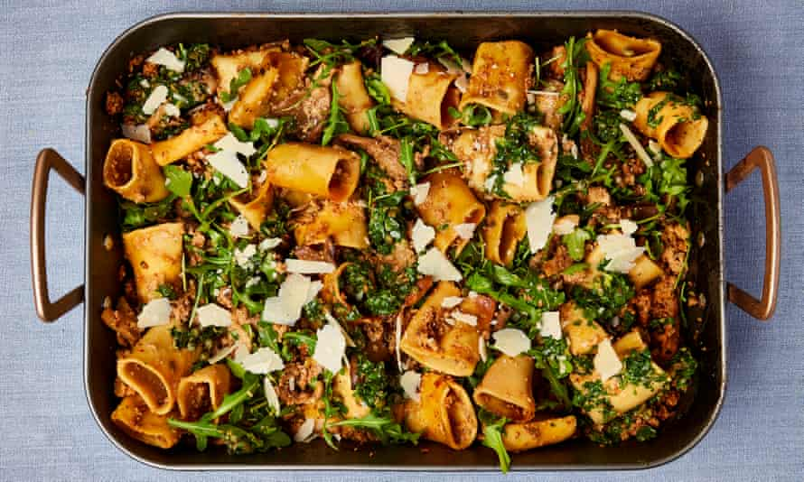

One-tray pork and mushroom pasta

There’s no mistake here: the dry pasta really does go into the sauce uncooked; just be sure to stir it in well, so it cooks evenly. Paccheri are wide pasta tubes that are sold in some supermarkets; failing that, try a good Italian deli. If you can’t find paccheri, use tortiglioni or rigatoni instead.
For the caper salsa
Heat the oven to 240C (220C fan)/465F/gas 9. Put the stock and porcini in a saucepan, bring to a boil, then turn off the heat and leave to cool slightly.
Mix the mince, sausage meat, Worcestershire sauce, tomato paste, chilli, fennel, sage, three tablespoons of oil, half the parmesan, one and three-quarters teaspoon of salt and plenty of pepper in a large roasting tray, about 32cm x 26cm. Blitz the celery, onion and garlic in a food processor until finely chopped, then tip into the tray and mix together. Bake on the middle shelf of the oven for 30 minutes, until golden brown and sizzling, then turn down the heat to 200C (180C fan)/390F/gas 6.
Use a fork to break apart the meat – you don’t want any big clumps – then stir in the oyster mushrooms, the stock and porcini, cream, pasta and remaining two tablespoons of oil. Stir the pasta into the sauce, pushing as much of it under the surface as possible (you might not be able to submerge it all). Return to the oven for 45 minutes, stirring the pasta twice in that time: make sure you stir it all into the sauce, to wet it all over, which will help prevent it going too brown.
Meanwhile, make the salsa by combining all ingredients in a small bowl with a good grind of pepper.
Stir the rocket and remaining grated parmesan through the pasta, then spoon the salsa over the top and leave to cool for 10 minutes before serving with a sprinkling of parmesan shavings.